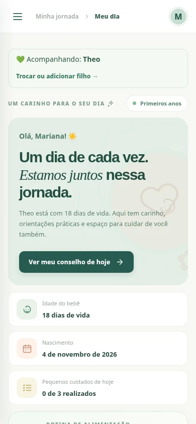
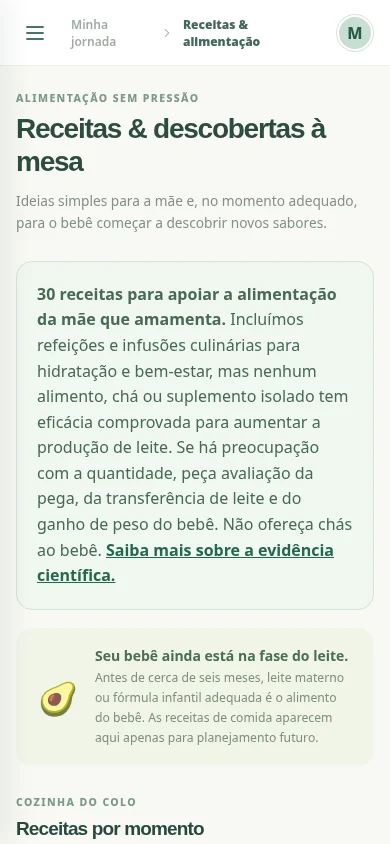
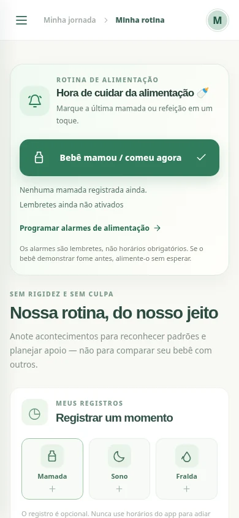

“Será que o sono está seguro?”
Encontre orientações para entender melhor os cuidados na hora do descanso.
O bebê nasceu, o manual não...
“Será que meu bebê mamou o suficiente?” “Por que ele não dorme?” “E as vacinas, como vou lembrar?” Se a sua cabeça não para, o Colo de Mãe reúne orientações, rotina e cuidados em um só lugar — para você não precisar descobrir tudo sozinha.
Aplicativo + 3 bônus inclusos por R$ 29,90

A gente entende você 💗
É normal ter dúvidas sobre amamentação, sono, rotina, cuidados e cada nova fase dos filhos. Você não precisa organizar tudo sozinha.
Encontre orientações para entender melhor os cuidados na hora do descanso.
Consulte conteúdos sobre amamentação e dúvidas comuns da maternidade.
Organize momentos, rotinas e lembranças, respeitando o seu próprio ritmo.
O Colo de Mãe foi pensado para trazer informação e acolhimento para perto de você.
Um app para acompanhar sua história
Uma experiência organizada para acompanhar você e seus filhos em diferentes etapas da vida.
Uma visão acolhedora para acompanhar os momentos e prioridades do seu dia.
Conteúdos para consultar quando surgir aquela pergunta de mãe.
Orientações sobre conforto, rotina e cuidados com o bebê.
Organização por fase e informações para acompanhar os cuidados.
Registre acontecimentos e guarde as memórias mais especiais.
Um lembrete carinhoso: cuidar de você também faz parte da jornada.
Prático no meio da vida real
Abra o aplicativo quando precisar de apoio, encontre conteúdos por assunto e organize o que é importante para sua família.
Da amamentação ao sono, consulte orientações reunidas em áreas fáceis de explorar.
Tenha um espaço para acompanhar informações, compromissos e os cuidados do dia a dia.
Registre conquistas e momentos especiais de cada filho, tudo no mesmo aplicativo.
Não é só promessa. É o aplicativo real.
Explore algumas das telas reais do aplicativo. Cada espaço foi pensado para apoiar a maternidade com mais organização, informação e carinho.
Acompanhe as informações e os momentos importantes da sua rotina.





Algumas das áreas do Colo de Mãe · Telas ilustrativas da versão real do app
Porque por trás de cada bebê, de cada descoberta e de cada nova fase, existe uma mãe que também precisa se sentir acolhida.
E tem mais carinho vindo aí 🎁
Materiais complementares para acompanhar você em diferentes momentos da maternidade, incluídos na oferta.
 BÔNUS 01
BÔNUS 01Guia de apoio
Um conteúdo carinhoso de apoio à amamentação e às dúvidas sobre a produção de leite.
Conteúdo especial
Mais um material de apoio pensado para acompanhar sua experiência na maternidade.
Guia do sono
Orientações para conhecer melhor a rotina e os cuidados do sono do bebê.
UMA ESCOLHA CHEIA DE CARINHO
Um aplicativo para organizar, aprender e guardar memórias — acompanhado de três bônus para deixar essa jornada ainda mais especial.
Colo de Mãe + seus 3 bônus
GARANTIR APP + 3 BÔNUS POR R$ 29,90Um cuidado especial para a sua maternidade. ♥
Ficou alguma dúvida?
O aplicativo Colo de Mãe e os três bônus apresentados: Mais Leite Materno, Lacta Lux e Noites Tranquilas.
Não. O aplicativo foi pensado para acompanhar desde a gestação até outras fases da vida dos filhos, com organização de perfis, cuidados e recordações.
Sim. O aplicativo possui uma área de perfis para adicionar e acompanhar seus filhos.
Não. O Colo de Mãe oferece conteúdo educativo e recursos de organização; recomendações individuais de saúde devem ser obtidas com profissionais habilitados.
O produto é digital. Os detalhes de pagamento e de entrega/acesso devem ser apresentados no checkout oficial.
As informações sobre meios de pagamento e eventuais condições de garantia ou reembolso devem constar no checkout oficial da oferta.
Seu cantinho de apoio está aqui ♥
O pagamento está temporariamente indisponível. Você pode tentar novamente ou consultar os canais oficiais do Colo de Mãe.